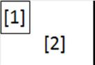
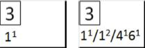

La section centrale
.
La section central
e
qui est utilisée pour décrire toutes les actions Durant l
e match est aménagée comme ceci :

[1]
Un espace pour les numéros de manches.
[2]
Un espace pour décrire les changements défensifs

La zone [2] doit contenir les numéros des positions défensives pour indiquer les changments qui ont été fait pendant une manche avec un exposant
(ex. 1
1
, 6
2
). Dans le cas ou plusieurs changements ont lieu durant la même manche, ils doivent être séparés par des slash ‘/’.
 Les différents carré
s
de la
secti
on centrale permettent de saisir les jeux dans le sens inverse des aiguilles d’une montre
: le carré en bas à droite indique l’action du frapper-coureur pour arriver en première base, le carré en haut à droite décrit le jeu en deuxième base et ainsi de suite. Le retrait du Batteur-coureur ou du coureur doit remplir toute la place disponible. A chaque fois qu’un coureur atteint une base, une barre oblique doit être ajoutée pour représenter l’avancée sur la base. La zone ouverte dans le centre du carré doit être remplie dans le cas d’un point mérité (voir chapitre 5).
Les différents carré
s
de la
secti
on centrale permettent de saisir les jeux dans le sens inverse des aiguilles d’une montre
: le carré en bas à droite indique l’action du frapper-coureur pour arriver en première base, le carré en haut à droite décrit le jeu en deuxième base et ainsi de suite. Le retrait du Batteur-coureur ou du coureur doit remplir toute la place disponible. A chaque fois qu’un coureur atteint une base, une barre oblique doit être ajoutée pour représenter l’avancée sur la base. La zone ouverte dans le centre du carré doit être remplie dans le cas d’un point mérité (voir chapitre 5).
 Quand une manche est terminée, une ligne diagonale est insérée après le dernier batteur
(voir exemple) pour indiquer que c’est la fin de la manche, et que le batteur qui commencera la prochaine manche sera celui qui est le suivant après cette ligne.
Quand une manche est terminée, une ligne diagonale est insérée après le dernier batteur
(voir exemple) pour indiquer que c’est la fin de la manche, et que le batteur qui commencera la prochaine manche sera celui qui est le suivant après cette ligne.

Quand plus de neuf batteurs se sont succédé dans une manche, on doit utiliser une colonne supplémentaire.
Le numéro de la manche doit être répété, et une flèche est utilisé pour indiquer que la manche continue.
 Pour la première manche, on note uniquement les valeurs de la première manche juste
sur le côté gauche
des abrévia
t
i
o
ns
.
Pour la première manche, on note uniquement les valeurs de la première manche juste
sur le côté gauche
des abrévia
t
i
o
ns
.
Pour les manches suivantes, la colonne de gauche contient les valeurs de la manche, le côté droit contient le total cumulatif manche par manche,
q
ui sont calculés en ajoutant les valeurs des deux colonnes qui sont
à
gauche de cette colonne.
|
AB
|
Nombre de’ ‘At Bat’ dans la manche. Il ne faut pas confondre le nombre de ‘At Abt’ avec le nombre de passage au bâton.
|
|
R
|
Le nombre de points marqués dans la manche.
|
|
ER
|
Le nombre de points mérités marqués dans la manche.
|
|
H
|
Le nombre de ‘hits’ dans la manche.
|
|
A
|
Le nombre d’assistance dans la manche.
|
|
E
|
Le nombre d’erreur commisse dans la manche.
|
|
LOB
|
Le nombre de coureurs laissés sur base dans la manche.
|